주택관리사보-1차 (2022-07-09 기출문제)
1과목: 민법
1. 민법의 법원(法源)에 관한 설명으로 옳지 않은 것은? (다툼이 있으면 판례에 따름)
- 일반적으로 승인된 국제법규가 민사에 관한 것이면 민법의 법원이 될 수 있다.
- 민사에 관하여 법률에 규정이 없으면 관습법에 의하고 관습법이 없으면 조리에 의한다.
- 사실인 관습은 사적 자치가 인정되는 분야에서 법률행위 당사자의 의사를 보충하는 기능을 한다.
- 민사에 관한 대법원규칙은 민법의 법원이 될 수 있다.
- 관습법은 당사자가 그 존재를 주장ㆍ증명해야만 법원(法院)이 이를 적용할 수 있다.
(정답률: 25%)

2. 권리를 분류할 때 그 연결이 옳지 않은 것은?
- 상계권 – 청구권
- 소유권 – 지배권
- 사원총회에서의 결의권 – 사원권
- 계약해제권 – 형성권
- 소유권이전등기청구권 - 재산권
(정답률: 5%)
3. 권리 상호간의 관계에 관한 설명으로 옳은 것을 모두 고른 것은? (다툼이 있으면 판례에 따름)
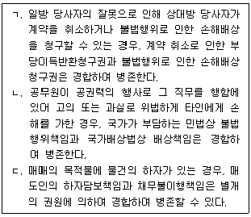
- ㄴ
- ㄷ
- ㄱ, ㄴ
- ㄱ, ㄷ
- ㄱ, ㄴ, ㄷ
(정답률: 10%)
4. 미성년자에 관한 설명으로 옳지 않은 것은? (다툼이 있으면 판례에 따름)
- 미성년자가 제한능력을 이유로 자신의 법률행위를 취소한 경우, 악의인 미성년자는 받은 이익에 이자를 붙여 반환해야 한다.
- 미성년자는 타인의 임의대리인이 될 수 있다.
- 법정대리인이 범위를 정하여 처분을 허락한 재산은 미성년자가 임의로 처분할 수 있다.
- 미성년자의 법률행위에 대한 법정대리인의 동의는 묵시적으로도 할 수 있다.
- 미성년자는 법정대리인으로부터 허락을 얻은 특정한 영업에 관하여 성년자와 동일한 행위능력이 있다.
(정답률: 5%)
5. 부재와 실종에 관한 설명으로 옳은 것은? (다툼이 있으면 판례에 따름)
- 법원이 선임한 재산관리인은 법원의 허가 없이도 민법 제118조에서 정한 권한을 넘는 행위를 할 수 있다.
- 법원이 선임한 재산관리인에 대하여 법원은 부재자의 재산을 보존하기 위하여 필요한 처분을 명할 수 없다.
- 부재자의 제1순위 상속인이 있는 경우에 제4순위의 상속인은 그 부재자에 대한 실종선고를 청구할 수 없다.
- 실종선고가 확정되면 실종선고를 받은 자는 실종선고 시에 사망한 것으로 본다.
- 보통실종의 실종기간은 3년이다.
(정답률: 10%)
6. 제한능력자에 관한 설명으로 옳지 않은 것은?
- 제한능력자의 단독행위에 대한 거절의 의사표시는 제한능력자에게도 할 수 있다.
- 가정법원은 취소할 수 없는 피성년후견인의 법률행위의 범위를 정할 수 있다.
- 가정법원은 한정후견개시심판을 할 때 본인의 의사를 고려해야 한다.
- 제한능력자와 계약을 맺은 상대방은 계약 당시에 제한능력자임을 알았을 경우에는 그 의사표시를 철회할 수 없다.
- 피성년후견인이 적극적으로 속임수를 써서 자기를 능력자로 믿게 한 경우에도 그 행위를 취소할 수 있다.
(정답률: 10%)
7. 재단법인 정관의 필요적 기재사항이 아닌 것은?
- 목적
- 사무소의 소재지
- 자산에 관한 규정
- 이사의 임면에 관한 규정
- 존립시기를 정하는 때에는 그 시기
(정답률: 15%)
8. 민법상 법인 등에 관한 설명으로 옳지 않은 것은? (다툼이 있으면 판례에 따름)
- 대표권이 없는 이사는 법인의 대표기관이 아니므로 그의 행위로 인하여 법인의 불법행위가 성립하지 않는다.
- 법인의 정관에 규정된 대표권제한을 등기하지 않았더라도 그 제한으로 악의의 제3자에게 대항할 수 있다.
- 비법인사단의 정관에 대표자의 대표권이 제한되어 있어도 그 거래 상대방이 대표권제한에 대해 선의ㆍ무과실이면 그 거래행위는 유효하다.
- 이사는 정관 또는 사원총회의 결의로 금지하지 않은 사항에 한하여 타인으로 하여금 특정한 행위를 대리하게 할 수 있다.
- 이사는 특별한 사정이 없는 한 법인의 사무에 관하여 각자 법인을 대표한다.
(정답률: 5%)
9. 민법상 법인의 해산과 청산에 관한 설명으로 옳지 않은 것은? (다툼이 있으면 판례에 따름)
- 법인의 해산 및 청산은 법원이 검사, 감독한다.
- 사단법인의 사원이 없게 되면 이는 법인의 해산사유가 될 뿐 이로써 곧 법인의 권리능력이 소멸하는 것은 아니다.
- 청산 중의 법인은 변제기에 이르지 아니한 채권에 대하여 변제할 수 있다.
- 법인의 목적달성이 불가능한 경우, 법인은 설립허가가 취소되어야 해산할 수 있다.
- 해산한 법인이 정관에 반하여 잔여재산을 처분한 경우, 그 처분행위는 특단의 사정이 없는 한 무효이다.
(정답률: 5%)
10. 물건에 관한 설명으로 옳지 않은 것은? (다툼이 있으면 판례에 따름)
- 전기 기타 관리할 수 있는 자연력은 동산이다.
- 특정할 수 있는 집합물 전체를 하나의 재산권으로 하는 담보권을 설정할 수 있다.
- 건물의 개수는 공부상의 등록에 의해서만 결정된다.
- 전세권은 1필의 토지의 일부에도 설정될 수 있다.
- 토지를 구성하고 있는 토석(土石)은 특별한 경우를 제외하고는 토지와 분리하여 별도로 거래의 객체가 될 수 없다.
(정답률: 0%)
11. 주물과 종물, 원물과 과실(果實)에 관한 설명으로 옳지 않은 것은? (다툼이 있으면 판례에 따름)
- 주물의 소유자의 사용에 공여되고 있더라도 주물 자체의 효용과 관계없는 물건은 종물이 아니다.
- 저당목적 토지 위의 건물은 특별한 사정이 없는 한 그 토지의 종물이다.
- 천연과실은 그 원물로부터 분리하는 때에 이를 수취할 권리자에게 속한다.
- 건물을 사용함으로써 얻는 이득은 그 건물의 과실에 준하는 것으로 본다.
- 법정과실은 수취할 권리의 존속기간일수의 비율로 취득한다.
(정답률: 10%)
12. 법률행위의 무효와 취소에 관한 설명으로 옳지 않은 것은? (다툼이 있으면 판례에 따름)
- 법률행위의 일부분이 무효인 경우, 특별한 사정이 없는 한 그 전부를 무효로 한다.
- 일부무효에 관한 민법 제137조는 당사자의 합의로 그 적용을 배제할 수 있다.
- 무효인 가등기를 유효한 등기로 전용하기로 약정한 경우, 그 가등기는 등기시로 소급하여 유효한 등기로 된다.
- 취소할 수 있는 법률행위의 상대방이 확정된 경우, 취소는 그 상대방에 대한 의사표시로 해야 한다.
- 제한능력자의 법정대리인이 제한능력자의 법률행위를 추인한 후에는 제한능력을 이유로 그 법률행위를 취소하지 못한다.
(정답률: 0%)
13. 조건과 기한에 관한 설명으로 옳은 것은? (다툼이 있으면 판례에 따름)
- 특별한 사정이 없는 한 기한의 이익은 이를 포기할 수 없다.
- 정지조건있는 법률행위는 조건이 성취한 때로부터 그 효력을 잃는다.
- 조건의 성취가 미정한 권리는 일반규정에 의하여 담보로 할 수 없다.
- 정지조건이 법률행위 당시에 이미 성취할 수 없는 것인 경우, 그 법률행위는 무효이다.
- 법률행위에 어떤 조건이 붙어 있었는지 여부는 그 조건의 부존재를 주장하는 자가 이를 증명해야 한다.
(정답률: 10%)
14. 소멸시효에 관한 설명으로 옳은 것은? (다툼이 있으면 판례에 따름)
- 소멸시효의 이익은 미리 포기할 수 있다.
- 1개월 단위로 지급되는 집합건물의 관리비채권의 소멸시효기간은 3년이다.
- 부작위를 목적으로 하는 채권의 소멸시효는 계약체결시부터 진행한다.
- 근저당권설정약정에 의한 근저당권설정등기청구권은 그 피담보채권이 될 채권과 별개로 소멸시효에 걸리지 않는다.
- 당사자가 본래의 소멸시효 기산일과 다른 기산일을 주장하는 경우, 법원은 원칙적으로 본래의 소멸시효 기산일을 기준으로 소멸시효를 계산해야 한다.
(정답률: 10%)
15. 소멸시효의 중단에 관한 설명으로 옳지 않은 것은? (다툼이 있으면 판례에 따름)
- 승인으로 인한 시효중단의 효력은 그 승인의 통지가 상대방에게 발신된 때에 발생한다.
- 소멸시효의 중단사유인 승인은 묵시적으로도 할 수 있다.
- 재판상의 청구로 인하여 중단된 시효는 재판이 확정된 때로부터 새로이 진행한다.
- 지급명령신청은 소멸시효의 중단사유로서 재판상의 청구에 포함된다.
- 가압류는 소멸시효의 중단사유이다.
(정답률: 5%)
16. 법인의 등기에 관한 설명으로 옳지 않은 것은?
- 법인은 그 주된 사무소의 소재지에서 설립등기를 함으로써 성립한다.
- 법인설립의 허가가 있는 때에는 그 허가서가 도착한 날로부터 3주간내에 설립등기를 해야 한다.
- 대표권 있는 이사의 성명과 주소는 등기사항이다.
- 청산이 종결한 때에는 감사는 3주간내에 이를 등기하고 주무관청에 신고해야 한다.
- 법인이 동일한 등기소의 관할구역내에서 사무소를 이전한 때에는 그 이전한 것을 등기하면 된다.
(정답률: 0%)
17. 상대방 없는 단독행위에 해당하는 것을 모두 고른 것은? (다툼이 있으면 판례에 따름)
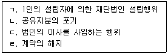
- ㄱ
- ㄱ, ㄴ
- ㄷ, ㄹ
- ㄱ, ㄴ, ㄷ
- ㄴ, ㄷ, ㄹ
(정답률: 10%)
18. 사기 또는 강박에 의한 의사표시에 관한 설명으로 옳지 않은 것은? (다툼이 있으면 판례에 따름)
- 강박에 의하여 의사결정의 자유가 완전히 박탈된 상태에서 이루어진 의사표시는 무효이다.
- 교환계약의 당사자가 자기가 소유하는 목적물의 시가를 묵비하여 상대방에게 고지하지 않은 것은 특별한 사정이 없는 한 기망행위에 해당하지 않는다.
- 어떤 해악의 고지가 없이 단지 각서에 서명ㆍ날인할 것을 강력히 요구한 것만으로도 강박에 해당한다.
- 제3자의 사기행위로 체결한 계약에서 그 사기행위 자체가 불법행위를 구성하는 경우, 피해자가 제3자에게 불법행위로 인한 손해배상을 청구하기 위하여 그 계약을 취소할 필요는 없다.
- 상대방 있는 의사표시에 있어서 상대방과 동일시할 수 있는 자의 사기는 제3자의 사기에 해당하지 않는다.
(정답률: 5%)
19. 불공정한 법률행위에 관한 설명으로 옳지 않은 것은? (다툼이 있으면 판례에 따름)
- 무상증여에는 불공정한 법률행위에 관한 규정이 적용되지 않는다.
- 급부와 반대급부 사이의 '현저한 불균형' 여부의 판단은 당사자의 주관적 가치에 의해 야 한다.
- 불공정한 법률행위에 해당하여 무효인 경우에도 무효행위의 전환에 관한 민법 제138조가 적용될 수 있다.
- 대리행위가 불공정한 법률행위에 해당하는지를 판단함에 있어서 '무경험'은 대리인을 기준으로 한다.
- 불공정한 법률행위에서의 '궁박'에는 정신적ㆍ심리적 원인에 의한 것도 포함될 수 있다.
(정답률: 10%)
20. 진의 아닌 의사표시에 관한 설명으로 옳은 것을 모두 고른 것은? (다툼이 있으면 판례에 따름)
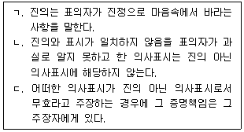
- ㄱ
- ㄴ
- ㄱ, ㄷ
- ㄴ, ㄷ
- ㄱ, ㄴ, ㄷ
(정답률: 5%)
21. 착오에 의한 의사표시에 관한 설명으로 옳지 않은 것은? (다툼이 있으면 판례에 따름)
- 매도인이 매수인의 채무불이행을 이유로 매매계약을 적법하게 해제한 후에도 매수인은 착오를 이유로 그 매매계약을 취소할 수 있다.
- 물건의 하자로 매도인의 하자담보책임이 성립하는 경우, 매수인은 매매계약 내용의 중요부분에 착오가 있더라도 그 계약을 취소할 수 없다.
- 부동산 매매계약에서 시가에 관한 착오는 원칙적으로 법률행위의 중요부분에 관한 착오가 아니다.
- 상대방이 표의자의 착오를 알고 이용한 경우에는 착오가 표의자의 중대한 과실로 인한 것이라도 표의자는 그 의사표시를 취소할 수 있다.
- 계약당사자의 합의로 착오로 인한 의사표시 취소에 관한 민법 제109조 제1항의 적용을 배제할 수 있다.
(정답률: 0%)
22. 민법상 복대리권의 소멸사유가 아닌 것은?
- 본인의 사망
- 대리인의 성년후견의 개시
- 본인의 특정후견의 개시
- 복대리인의 파산
- 복대리인의 사망
(정답률: 10%)
23. 대리에 관한 설명으로 옳지 않은 것은? (다툼이 있으면 판례에 따름)
- 대리권수여의 표시에 의한 표현대리는 어떤 자가 본인을 대리하여 제3자와 법률행위를 함에 있어서 본인이 그 자에게 대리권을 수여하였다는 표시를 그 제3자에게 한 경우에 성립할 수 있다.
- 대리인이 대리권 소멸 후 복대리인을 선임하여 복대리인으로 하여금 상대방과 대리행위를 하도록 한 경우에도 대리권 소멸 후의 표현대리가 성립할 수 있다.
- 등기신청의 대리권도 권한을 넘은 표현대리의 기본대리권이 될 수 있다.
- 매매계약을 체결할 권한을 수여받은 대리인이라도 특별한 사정이 없는 한 그 계약을 해제할 권한은 없다.
- 무권대리행위가 제3자의 위법행위로 야기된 경우에는 무권대리인에게 귀책사유가 있어야 민법 제135조에 따른 무권대리인의 상대방에 대한 책임이 인정된다.
(정답률: 0%)
24. 권리의 원시취득에 해당하지 않는 것은? (다툼이 있으면 판례에 따름)
- 건물의 신축에 의한 소유권취득
- 유실물의 습득에 의한 소유권취득
- 무주물의 선점에 의한 소유권취득
- 부동산점유취득시효에 의한 소유권취득
- 근저당권 실행을 위한 경매에 의한 소유권취득
(정답률: 0%)
25. X토지가 소유자인 최초 매도인 甲으로부터 중간 매수인 乙에게, 다시 乙로부터 최종 매수인 丙에게 순차로 매도되었다. 한편 甲, 乙, 丙은 전원의 의사합치로 X토지에 대하여 甲이 丙에게 직접 소유권이전등기를 하기로 하는 중간생략등기의 합의를 하였다. 이에 관한 설명으로 옳은 것을 모두 고른 것은? (다툼이 있으면 판례에 따름)
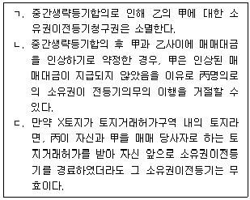
- ㄱ
- ㄷ
- ㄱ, ㄴ
- ㄴ, ㄷ
- ㄱ, ㄴ, ㄷ
(정답률: 5%)
26. 부동산매매계약으로 인한 등기청구권에 관한 설명으로 옳은 것을 모두 고른 것은? (다툼이 있으면 판례에 따름)
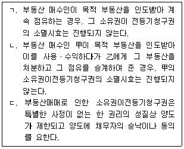
- ㄱ
- ㄷ
- ㄱ, ㄴ
- ㄴ, ㄷ
- ㄱ, ㄴ, ㄷ
(정답률: 0%)
27. 자주점유에 관한 설명으로 옳지 않은 것은? (다툼이 있으면 판례에 따름)
- 부동산의 점유자가 지적공부 등의 관리주체인 국가나 지방자치단체인 경우에는 자주 점유로 추정되지 않는다.
- 매매로 인한 점유의 승계가 있는 경우, 전(前) 점유자의 점유가 타주점유라도 현(現) 점유자가 자기의 점유만을 주장하는 때에는 현(現) 점유자의 점유는 자주점유로 추정된다.
- 점유자가 스스로 주장한 매매와 같은 자주점유의 권원이 인정되지 않는다는 사유만으로는 자주점유의 추정이 깨진다고 볼 수 없다.
- 자주점유인지 여부는 점유취득의 원인이 된 권원의 성질이나 점유와 관계가 있는 모든 사정에 의하여 외형적ㆍ객관적으로 결정되어야 한다.
- 자주점유에서 소유의 의사는 사실상 소유할 의사가 있는 것으로 충분하다.
(정답률: 5%)
28. 부동산 점유취득시효에 관한 설명으로 옳지 않은 것은? (다툼이 있으면 판례에 따름)
- 시효완성자의 시효이익의 포기는 특별한 사정이 없는 한 시효완성 당시의 원인무효인 등기의 등기부상 소유명의자에게 하여도 그 효력이 있다.
- 점유자가 시효완성 후 점유를 상실하였다고 하더라도 이를 시효이익의 포기로 볼 수 있는 경우가 아닌 한, 이미 취득한 소유권이전등기청구권이 즉시 소멸되는 것은 아니다.
- 시효완성 당시의 점유자로부터 양수하여 점유를 승계한 현(現) 점유자는 전(前) 점유자의 시효완성의 효과를 주장하여 직접 자기에게로 소유권이전등기를 청구할 수 없다.
- 시효완성 당시의 소유자는 특별한 사정이 없는 한 시효완성자가 등기를 마치지 않았더라도 그에 대하여 부동산의 점유로 인한 부당이득반환청구를 할 수 없다.
- 시효완성 당시의 소유자는 특별한 사정이 없는 한 시효완성자가 등기를 마치지 않았더라도 그에 대하여 불법점유임을 이유로 그 부동산의 인도를 청구할 수 없다.
(정답률: 0%)
29. 저당권에 관한 설명으로 옳지 않은 것은? (다툼이 있으면 판례에 따름)
- 지상권은 저당권의 목적으로 할 수 없다.
- 등록된 자동차는 저당권의 목적물이 될 수 있다.
- 저당권자는 피담보채권의 변제를 받기 위해 저당물의 경매를 청구할 수 있다.
- 저당부동산의 제3취득자는 그 부동산에 대한 저당권 실행을 위한 경매절차에서 매수인이 될 수 있다.
- 저당목적물을 권한 없이 멸실ㆍ훼손하거나 담보가치를 감소시키는 행위는 특별한 사정이 없는 한 불법행위가 될 수 있다.
(정답률: 5%)
30. 전세권에 관한 설명으로 옳지 않은 것은? (다툼이 있으면 판례에 따름)
- 전세권이 갱신 없이 그 존속기간이 만료되면 전세권의 용익물권적 권능은 전세권설정등기의 말소 없이도 당연히 소멸한다.
- 전세권이 존속하는 동안은 전세권을 존속시키기로 하면서 전세금반환채권만을 전세권과 분리하여 확정적으로 양도하는 것은 허용되지 않는다.
- 토지임차인의 건물 기타 공작물의 매수청구권에 관한 민법 제643조의 규정은 토지의 전세권에도 유추적용될 수 있다.
- 전세권이 성립한 후 그 소멸 전에 전세목적물의 소유권이 이전된 경우, 목적물의 구(舊) 소유자는 전세권이 소멸하는 때에 전세권자에 대하여 전세금 반환의무를 부담한다.
- 대지와 건물이 동일한 소유자에 속한 경우에 건물에 전세권을 설정한 때에는 그 대지소유권의 특별승계인은 전세권설정자에 대하여 지상권을 설정한 것으로 본다.
(정답률: 5%)
31. 甲, 乙, 丙이 X토지를 같은 지분비율로 공유하고 있는데, 甲은 乙, 丙과 어떠한 합의도 없이 X토지 전부를 독점적으로 점유ㆍ사용하고 있다. 이에 관한 설명으로 옳은 것을 모두 고른 것은? (다툼이 있으면 판례에 따름)
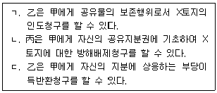
- ㄱ
- ㄴ
- ㄱ, ㄷ
- ㄴ, ㄷ
- ㄱ, ㄴ, ㄷ
(정답률: 5%)
32. 민법상 유치권에 관한 설명으로 옳지 않은 것은? (다툼이 있으면 판례에 따름)
- 채권자가 채무자를 직접점유자로 하여 유치물을 간접점유하는 경우, 그 유치물에 대한 유치권은 성립하지 않는다.
- 타인의 물건에 대한 점유가 불법행위로 인한 경우, 그 물건에 대한 유치권은 성립하지 않는다.
- 유치권배제특약에 따른 효력은 특약의 상대방만 주장할 수 있다.
- 유치권배제특약에는 조건을 붙일 수 있다.
- 유치권의 행사는 피담보채권의 소멸시효의 진행에 영향을 미치지 않는다.
(정답률: 0%)
33. 선택채권에 관한 설명으로 옳은 것은? (다툼이 있으면 판례에 따름)
- 선택권에 관하여 법률의 규정이나 당사자의 약정이 없으면 선택권은 채권자에게 있다.
- 선택권 행사의 기간이 있는 경우, 선택권자가 그 기간내에 선택권을 행사하지 않으면 즉시 상대방에게 선택권이 이전된다.
- 제3자가 선택권을 행사하기로 하는 당사자의 약정은 무효이다.
- 선택채권의 소멸시효는 선택권을 행사한 때부터 진행한다.
- 채권의 목적으로 선택할 여러 개의 행위 중에 당사자의 과실없이 처음부터 불능한 것이 있으면 채권의 목적은 잔존한 것에 존재한다.
(정답률: 0%)
34. 매도인 甲은 매수인 乙에 대한 매매대금채권 전부를 丙에게 즉시 양도하기로 丙과 합의하였다. 이에 관한 설명으로 옳지 않은 것은? (다툼이 있으면 판례에 따름)
- 甲의 매매대금채권은 그 성질상 원칙적으로 양도가 가능하다.
- 채권의 양도통지는 甲이 乙에게 직접 해야 하며 丙에게 이를 위임할 수 없다.
- 乙이 채권의 양도통지만을 받은 경우, 그 통지 전에 乙이 甲에게 일부 변제한 것이 있으면 乙은 이를 가지고 丙에게 대항할 수 있다.
- 甲이 乙에게 채권의 양도통지를 한 경우, 甲은 丙의 동의가 없으면 그 통지를 철회하지 못한다.
- 만일 甲이 乙과의 양도금지특약에 반하여 매매대금채권을 양도하였고 丙이 그 특약을 과실 없이 알지 못하였다면, 위 채권양도는 유효하다.
(정답률: 5%)
35. 계약의 합의해제에 관한 설명으로 옳지 않은 것은? (다툼이 있으면 판례에 따름)
- 일부 이행된 계약의 묵시적 합의해제가 인정되기 위해서는 그 원상회복에 관하여도 의사가 일치되어야 한다.
- 당사자 일방이 합의해제에 따른 원상회복 및 손해배상의 범위에 관한 조건을 제시한 경우, 그 조건에 관한 합의까지 이루어져야 합의해제가 성립한다.
- 계약이 합의해제된 경우, 원칙적으로 채무불이행에 따른 손해배상을 청구할 수 있다.
- 계약의 해제에 관한 민법 제543조 이하의 규정은 합의해제에는 원칙적으로 적용되지 않는다.
- 매매계약이 합의해제된 경우, 원칙적으로 매수인에게 이전되었던 매매목적물의 소유권은 당연히 매도인에게 복귀한다.
(정답률: 10%)
36. 甲은 乙소유의 X토지를 3억 원에 매수하면서 계약금으로 3천만 원을 乙에게 지급하기로 약정하고, 그 즉시 계약금 전액을 乙의 계좌로 입금하였다. 이에 관한 설명으로 옳지 않은 것은? (다툼이 있으면 판례에 따름)
- 甲과 乙의 계약금계약은 요물계약이다.
- 甲과 乙사이에 다른 약정이 없는 한 계약금은 해약금의 성질을 갖는다.
- 乙에게 지급된 계약금은 특약이 없는 한 손해배상액의 예정으로 볼 수 없다.
- 만약 X토지가 토지거래허가구역 내의 토지이고 甲과 乙이 이행에 착수하기 전에 관할관청으로부터 토지거래허가를 받았다면, 甲은 3천만 원을 포기하고 매매계약을 해제할 수 있다.
- 乙이 甲에게 6천만 원을 상환하고 매매계약을 해제하려는 경우, 甲이 6천만 원을 수령하지 않는 때에는 乙은 이를 공탁해야 유효하게 해제할 수 있다.
(정답률: 0%)
37. 乙은 건물 소유의 목적으로 甲소유 X토지를 10년간 월차임 2백만 원에 임차한 후, X토지에 Y건물을 신축하여 자신의 명의로 보존등기를 마쳤다. 이에 관한 설명으로 옳지 않은 것은?
- 甲은 다른 약정이 없는 한 임대기간 중 X토지를 사용, 수익에 필요한 상태로 유지할 의무를 부담한다.
- X토지에 대한 임차권등기를 하지 않았다면 특별한 사정이 없는 한 乙은 X토지에 대한 임차권으로 제3자에게 대항하지 못한다.
- 甲이 X토지의 보존을 위한 행위를 하는 경우, 乙은 특별한 사정이 없는 한 이를 거절하지 못한다.
- 乙이 6백만 원의 차임을 연체하고 있는 경우에 甲은 임대차계약을 해지할 수 있다.
- 甲이 변제기를 경과한 최후 2년의 차임채권에 의하여 Y건물을 압류한 때에는 저당권과 동일한 효력이 있다.
(정답률: 0%)
38. 도급계약에 관한 설명으로 옳지 않은 것은? (다툼이 있으면 판례에 따름)
- 부대체물을 제작하여 공급하기로 하는 계약은 도급의 성질을 갖는다.
- 당사자 사이의 특약 등 특별한 사정이 없는 한 수급인 자신이 직접 일을 완성해야 하는 것은 아니다.
- 도급계약의 보수(報酬) 일부를 선급하기로 하는 특약이 있는 경우, 수급인은 그 제공이 있을 때까지 일의 착수를 거절할 수 있다.
- 제작물공급계약에서 완성된 목적물의 인도와 동시에 보수(報酬)를 지급해야 하는 경우, 특별한 사정이 없는 한 목적물의 인도는 단순한 점유의 이전만으로 충분하다.
- 완성된 목적물에 중요하지 않은 하자가 있고 그 보수(補修)에 과다한 비용이 필요한 경우, 도급인은 특별한 사정이 없는 한 그 하자의 보수(補修)를 청구할 수 없다.
(정답률: 0%)
39. 부당이득에 관한 설명으로 옳지 않은 것은? (다툼이 있으면 판례에 따름)
- 채무자가 피해자로부터 횡령한 금전을 자신의 채권자에 대한 변제에 사용한 경우, 채권자가 변제를 수령할 때 횡령사실을 알았던 때에도 채권자의 금전취득은 피해자에 대한 관계에서 법률상 원인이 있다.
- 연대보증인이 있는 주채무를 제3자가 변제하여 주채무가 소멸한 경우, 그 제3자는 연대보증인에게 부당이득반환을 청구할 수 없다.
- 임차인이 임대차계약이 종료한 후 임차건물을 계속 점유하였더라도 이익을 얻지 않았다면 임차인은 그로 인한 부당이득반환의무를 지지 않는다.
- 과반수 지분의 공유자로부터 제3자가 공유물의 사용ㆍ수익을 허락받아 그 공유물을 점유하고 있는 경우, 소수지분권자는 그 제3자에게 점유로 인한 부당이득반환청구를 할 수 없다.
- 변제자가 채무없음을 알고 있었지만 자기의 자유로운 의사에 반하여 변제를 강제당한 경우, 변제자는 부당이득반환청구권을 상실하지 않는다.
(정답률: 0%)
40. 불법행위에 관한 설명으로 옳은 것을 모두 고른 것은? (다툼이 있으면 판례에 따름)
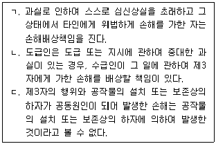
- ㄱ
- ㄷ
- ㄱ, ㄴ
- ㄴ, ㄷ
- ㄱ, ㄴ, ㄷ
(정답률: 5%)
2과목: 회계원리
41. 자산과 비용에 모두 영향을 미치는 거래는?
- 당기 종업원급여를 현금으로 지급하였다.
- 비품을 외상으로 구입하였다.
- 현금을 출자하여 회사를 설립하였다.
- 매입채무를 당좌예금으로 지급하였다.
- 기존 차입금에 대하여 추가 담보를 제공하였다.
(정답률: 0%)
42. 20×1년 12월분 관리직 종업원 급여 ￦500이 발생하였으나 장부에 기록하지 않았고, 이 금액을 20×2년 1월에 지급하면서 전액 20×2년 비용으로 인식하였다. 이러한 회계처리의 영향으로 옳지 않은 것은? (단, 20×1년과 20×2년에 동 급여에 대한 별도의 수정분개는 하지 않은 것으로 가정한다.)
- 20×1년 비용 ￦500 과소계상
- 20×1년 말 자산에는 영향 없음
- 20×1년 말 부채 ￦500 과소계상
- 20×1년 말 자본 ￦500 과대계상
- 20×2년 당기순이익에는 영향 없음
(정답률: 0%)
43. 외부회계감사에 관한 설명으로 옳지 않은 것은?
- 감사의 목적은 의도된 재무제표 이용자의 신뢰수준을 향상시키는 데 있다.
- 감사인이 충분하고 적합한 감사증거를 입수한 결과, 왜곡표시가 재무제표에 중요하나 전반적이지는 않으면 한정의견이 표명된다.
- 회계감사를 수행하는 감사인은 감사대상 재무제표를 작성하는 기업이나 경영자와 독립적이어야 한다.
- 재무제표가 중요성 관점에서 일반적으로 인정된 회계기준에 따라 작성되었다고 판단되면 적정의견이 표명된다.
- 감사대상 재무제표는 기업의 경영진이 감사인의 도움 없이 작성하는 것이 원칙이나, 주석 작성은 감사인의 도움을 받을 수 있다.
(정답률: 0%)
44. (주)한국은 20×2년 3월 27일 정기 주주총회에서 20×1년 재무제표를 승인하면서 현금배당을 선언하고 즉시 지급하였다. 주주총회의 배당금 선언 및 지급이 (주)한국의 재무제표에 미치는 영향으로 옳은 것은?
- 20×1년 말 현금을 감소시킨다.
- 20×1년 당기순이익을 감소시킨다.
- 20×1년 말 자본을 감소시킨다.
- 20×2년 당기순이익을 감소시킨다.
- 20×2년 말 자본을 감소시킨다.
(정답률: 0%)
45. (주)한국은 20×1년 10월 1일부터 1년간 상가를 임대하면서 동 일자에 향후 1년분 임대료 ￦6,000을 현금 수령하고 전액 수익으로 회계처리 하였다. 수정분개를 하지 않았을 경우, (주)한국의 20×1년 재무제표에 미치는 영향은? (단, 임대료는 월할계산한다.)
- 기말부채 ￦1,500 과대계상
- 기말부채 ￦4,500 과대계상
- 당기순이익 ￦1,500 과대계상
- 당기순이익 ￦4,500 과대계상
- 당기순이익 ￦6,000 과대계상
(정답률: 0%)
46. 재무정보의 질적특성에 관한 설명으로 옳지 않은 것은?
- 근본적 질적특성은 목적적합성과 표현충실성이다.
- 목적적합한 재무정보는 이용자들의 의사결정에 차이가 나도록 할 수 있다.
- 재무제표에 정보를 누락할 경우 주요 이용자들의 의사결정에 영향을 주면 그 정보는 중요한 것이다.
- 재무정보가 과거 평가에 대해 피드백을 제공한다면 확인가치를 갖는다.
- 완벽한 표현충실성을 위해서는 서술에 완전성과 중립성 및 적시성이 요구된다.
(정답률: 0%)
47. 일반목적재무보고에 관한 설명으로 옳지 않은 것은?
- 보고기업의 가치를 측정하여 제시하는 것을 주된 목적으로 한다.
- 현재 및 잠재적 투자자, 대여자 및 그 밖의 채권자가 주요이용자이다.
- 보고기업의 경제적자원 및 보고기업에 대한 청구권에 관한 정보를 제공한다.
- 한 기간의 보고기업의 현금흐름에 대한 정보는 이용자들이 기업의 미래 순현금유입창출 능력을 평가하는 데 도움이 된다.
- 보고기업의 경제적자원에 대한 경영진의 수탁책임을 평가하는 데에도 유용하다.
(정답률: 0%)
48. 재무제표 표시에 관한 설명으로 옳지 않은 것을 모두 고른 것은?
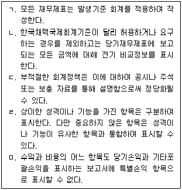
- ㄱ, ㄴ
- ㄱ, ㄷ
- ㄴ, ㅁ
- ㄷ, ㄹ
- ㄹ, ㅁ
(정답률: 0%)
49. (주)한국의 20×1년 영업활동 순현금유입액은 ￦12,000이다. 다음 자료를 이용할 때, 20×1년 법인세비용차감전순이익과 재무활동순현금흐름으로 옳은 것은?
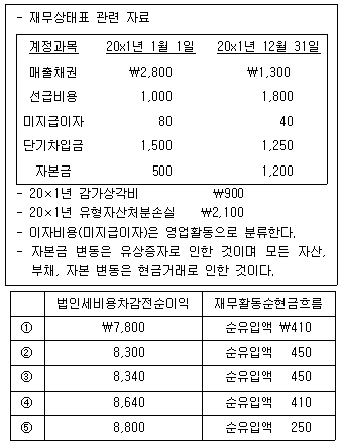
- ①
- ②
- ③
- ④
- ⑤
(정답률: 0%)
50. (주)한국의 20×1년 재고자산 매입과 매출에 관한 자료는 다음과 같다.
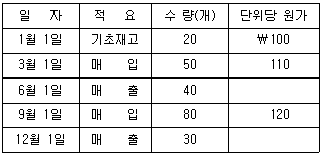
(주)한국이 계속기록법을 적용하면서 선입선출의 단위원가결정방법을 사용할 때, 20×1년 기말재고자산은? (단, 장부상 재고수량과 실지재고수량은 일치하며, 재고자산평가손실은 없다.)
- ￦8,700
- ￦9,120
- ￦9,320
- ￦9,600
- ￦9,700
(정답률: 0%)
51. (주)한국의 20×1년 초 상품재고는 ￦100,000이고 당기 상품매입액은 ￦400,000이다. (주)한국의 당기 상품매출은 ￦500,000이고 20×1년 말 상품재고가 ￦200,000일 때, 20×1년 상품매출원가는? (단, 재고자산감모손실과 재고자산평가손실 및 재고자산평가충당금은 없다.)
- ￦100,000
- ￦200,000
- ￦300,000
- ￦400,000
- ￦500,000
(정답률: 0%)
52. (주)한국은 재고자산감모손실 중 40%는 비정상감모손실(기타비용)로 처리하며, 정상감모손실과 평가손실은 매출원가에 포함한다. (주)한국의 20×1년 재고자산 관련 자료가 다음과 같을 때, 매출원가는?
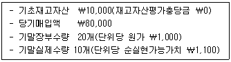
- ￦74,000
- ￦74,400
- ￦76,000
- ￦76,600
- ￦88,000
(정답률: 0%)
53. 재고자산의 회계처리에 관한 설명으로 옳지 않은 것은?
- 재고자산은 취득원가와 순실현가능가치 중 낮은 금액으로 측정한다.
- 통상적으로 상호 교환될 수 없는 재고자산항목의 원가와 특정 프로젝트별로 생산되고 분리되는 재화의 원가는 개별법을 사용하여 결정한다.
- 재고자산의 취득원가는 매입원가, 전환원가 및 재고자산을 현재의 장소에 현재의 상태로 이르게 하는 데 발생한 기타 원가 모두를 포함한다.
- 완성될 제품이 원가 이상으로 판매될 것으로 예상하는 경우에는 그 생산에 투입하기 위해 보유하는 원재료 및 기타 소모품을 감액하지 아니한다.
- 재고자산의 매입원가는 매입가격에 매입할인, 리베이트 및 기타 유사한 항목을 가산한 금액이다.
(정답률: 0%)
54. 취득과 직접 관련된 차입원가를 자본화하여야 하는 적격자산이 아닌 것은?
- 금융자산
- 무형자산
- 투자부동산
- 제조설비자산
- 전력생산설비
(정답률: 0%)
55. (주)한국은 20×1년 초 토지를 ￦4,000,000에 취득하면서 현금 ￦1,000,000을 즉시 지급하고 나머지 ￦3,000,000은 20×1년 말부터 매년 말에 각각 ￦1,000,000씩 3회 분할지급하기로 하였다. 이러한 대금지급은 일반적인 신용기간을 초과하는 것이다. 취득일 현재 토지의 현금가격상당액은 총지급액을 연 10% 이자율로 할인한 현재가치와 동일하다. 20×2년에 인식할 이자비용은? (단, 단수차이가 발생할 경우 가장 근사치를 선택한다.)
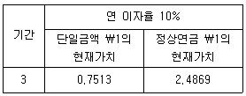
- ￦100,000
- ￦173,559
- ￦248,690
- ￦348,690
- ￦513,100
(정답률: 0%)
56. (주)한국은 20×1년 10월 1일 자산취득 관련 정부보조금 ￦100,000을 수령하여 취득원가 ￦800,000의 기계장치(내용연수 4년, 잔존가치 ￦0, 정액법 상각, 원가모형적용)를 취득하였다. 정부보조금에 부수되는 조건은 이미 충족되어 상환의무는 없으며, 정부보조금은 자산의 장부금액에서 차감하는 방법으로 회계처리한다. 20×1년 포괄손익계산서에 인식할 감가상각비는? (단, 감가상각비는 월할계산하며, 자본화는 고려하지 않는다.)
- ￦43,750
- ￦45,000
- ￦46,250
- ￦47,500
- ￦50,000
(정답률: 0%)
57. (주)한국은 20×1년 초 기계장치(내용연수 5년, 잔존가치 ￦0, 정액법 상각, 매년 말재평가모형 적용)를 ￦50,000에 취득하여 사용하기 시작하였다. 20×1년 말 기계장치의 공정가치는 ￦45,000일 때, (주)한국이 20×1년 말 인식할 재평가잉여금은?
- ￦0
- ￦5,000
- ￦10,000
- ￦15,000
- ￦20,000
(정답률: 0%)
58. (주)한국은 20×1년 초 건물을 ￦300,000에 취득하고 투자부동산(공정가치모형 선택)으로 분류하였다. 동 건물의 20×1년 말 공정가치는 ￦320,000이며, ㈜한국이 20×2년 초에 동 건물을 ￦325,000에 처분하였다면, 20×1년 당기순이익에 미치는 영향은? (단, (주)한국은 유형자산으로 분류하는 건물을 내용연수 10년, 잔존가치 ￦0, 정액법 상각한다.)
- ￦30,000 감소
- ￦10,000 감소
- ￦5,000 증가
- ￦20,000 증가
- ￦25,000 증가
(정답률: 0%)
59. (주)한국의 20×1년 자료가 다음과 같을 때, 20×1년 기말자본은? (단, 20×1년에 자본거래는 없다고 가정한다.)
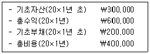
- ￦100,000
- ￦200,000
- ￦300,000
- ￦400,000
- ￦500,000
(정답률: 0%)
60. 금융부채에 해당하지 않는 것은?
- 사채
- 단기차입금
- 미지급금
- 매입채무
- 당기법인세부채
(정답률: 0%)
61. (주)한국은 20×1년 중 금융자산을 취득하고 주식A는 당기손익-공정가치 측정 금융자산으로, 주식B는 기타포괄손익-공정가치 측정 금융자산으로 분류하였다. 20×1년 중 주식A는 전부 매각하였고, 주식B는 20×1년 말 현재 보유하고 있다. 주식A의 매각금액과 20×1년 말 주식B의 공정가치가 다음과 같을 때, 20×1년 당기순이익에 미치는 영향은?
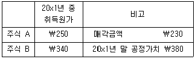
- ￦20 증가
- ￦40 증가
- ￦60 증가
- ￦20 감소
- ￦40 감소
(정답률: 0%)
62. (주)한국의 20×1년 말 매출채권 잔액은 ￦150,000이며, 매출채권에 대한 기대신용 손실을 계산하기 위한 연령별 기대신용손실률은 다음과 같다.
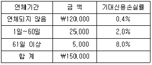
(주)한국의 20×1년 초 매출채권에 대한 손실충당금 잔액이 ￦2,500이고, 20×1년 중 매출채권 ￦1,000이 회수불능으로 확정되어 제거되었다. 20×1년 포괄손익계산서에 보고할 매출채권 손상차손(또는 손상차손환입)은?
- 손상차손환입 ￦120
- 손상차손환입 ￦380
- 손상차손 ￦120
- 손상차손 ￦1,120
- 손상차손 ￦1,380
(정답률: 0%)
63. (주)한국의 20×1년 말 재무자료에서 발췌한 자료이다. 20×1년 말 재무상태표의 현금및현금성자산으로 보고될 금액은? (단, (주)한국의 표시통화는 원화(￦)이다.)
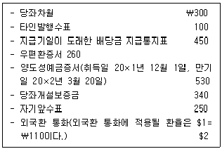
- ￦980
- ￦1,280
- ￦1,620
- ￦1,810
- ￦2,150
(정답률: 0%)
64. (주)한국은 20×1년 1월 1일에 (주)대한이 발행한 사채(액면금액 ￦10,000, 표시이자율 연 10%, 이자는 매년 12월 31일 지급, 만기 3년)를 공정가치로 취득하고 상각후원가 측정 금융자산으로 분류하였다. 취득당시 유효이자율은 연 12%이다. 동금융자산과 관련하여 (주)한국이 20×2년 12월 31일에 인식할 이자수익과 20×2년 12월 31일 금융자산 장부금액은? (단, 사채발행일과 취득일은 동일하며, 단수차이가 발생할 경우 가장 근사치를 선택한다.)
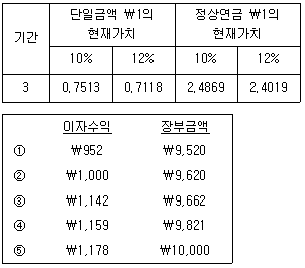
- ①
- ②
- ③
- ④
- ⑤
(정답률: 0%)
65. 충당부채, 우발부채, 우발자산에 관한 설명으로 옳은 것은?
- 경제적 효익의 유입가능성이 높지 않은 우발자산은 그 특성과 추정금액을 주석으로 공시한다.
- 과거에 우발부채로 처리한 경우에는 그 이후 기간에 미래 경제적 효익의 유출 가능성이 높아졌다고 하더라도 이를 충당부채로 인식할 수 없다.
- 미래에 영업손실이 발생할 가능성이 높은 경우에는 그러한 영업손실의 예상 금액을 신뢰성 있게 추정하여 충당부채로 인식한다.
- 충당부채는 화폐의 시간가치 영향이 중요하다고 하더라도 의무이행 시 예상되는 지출액을 할인하지 않은 금액으로 평가한다.
- 충당부채는 최초 인식과 관련 있는 지출에만 사용한다.
(정답률: 0%)
66. 자본에 관한 설명으로 옳은 것을 모두 고른 것은?
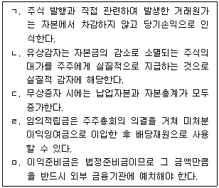
- ㄱ, ㄹ
- ㄱ, ㅁ
- ㄴ, ㄷ
- ㄴ, ㄹ
- ㄷ, ㅁ
(정답률: 0%)
67. (주)한국은 (주)민국과 매출액의 10%를 판매수수료로 지급하는 위탁판매계약을 맺고 있으며, (주)민국에게 적송한 재화의 통제권은 (주)한국이 계속 보유하고 있다. 20×1년에 (주)한국은 (주)민국에 단위당 원가 ￦90인 상품A 10개를 적송하였으며, (주)민국은 상품A 8개를 단위당 ￦100에 고객에게 판매하였다. 상품A의 판매와 관련하여 (주)한국과 (주)민국이 20×1년에 인식할 수익 금액은?
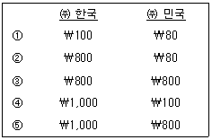
- ①
- ②
- ③
- ④
- ⑤
(정답률: 0%)
68. (주)한국은 20×1년 1월 1일에 액면금액 ￦1,000인 상품권 10매를 1매당 ￦900에 고객에게 최초 발행하였다. 고객은 상품권 액면금액의 80% 이상을 사용하면 잔액을 현금으로 돌려받을 수 있다. (주)한국은 20×1년 12월 31일까지 회수된 상품권 8매에 대해 상품인도와 함께 잔액 ￦700을 현금으로 지급하였다. (주)한국이 상기상품권과 관련하여 20×1년 포괄손익계산서에 인식할 수익 금액은?
- ￦6,500
- ￦7,200
- ￦8,300
- ￦9,000
- ￦10,000
(정답률: 0%)
69. (주)한국의 20×1년 1월 1일 현재 유통보통주식수는 100주이고, 20×1년에 유통보통주식수의 변동은 없다. 20×1년 당기순이익이 ￦10,000일 때, (주)한국의 기본주당순이익은? (단, (주)한국이 발행한 우선주는 없으며, 가중평균유통보통주식수는 월수를 기준으로 계산한다.)
- ￦0
- ￦10
- ￦100
- ￦1,000
- ￦10,000
(정답률: 5%)
70. (주)한국의 20×1년 포괄손익계산서 상 종업원급여는 ￦10,000이다. 재무상태표 상 관련 계정의 기초 및 기말 잔액이 다음과 같을 때, 20×1년 종업원급여 현금지출액은?
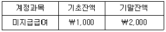
- ￦8,000
- ￦9,000
- ￦10,000
- ￦11,000
- ￦12,000
(정답률: 0%)
71. (주)한국의 20×0년 매출액은 ￦800이며, 20×0년과 20×1년의 매출액순이익률은각각 15%와 20%이다. 20×1년 당기순이익이 전기에 비해 25% 증가하였을 경우, 20×1년 매출액은?
- ￦600
- ￦750
- ￦800
- ￦960
- ￦1,000
(정답률: 0%)
72. (주)한국이 창고에 보관하던 상품이 20×1년 중에 발생한 화재로 인하여 전부 소실되었다. 20×0년과 20×1년의 상품 거래와 관련한 자료가 다음과 같을 때, 20×1년에 화재로 인해 소실된 것으로 추정되는 상품의 원가는? (단, (주)한국의 상품매출은 모두 신용매출이며, 상품 외의 재고자산은 없다.)
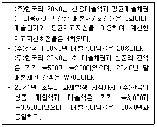
- ￦600
- ￦1,000
- ￦1,200
- ￦1,800
- ￦2,400
(정답률: 0%)
73. (주)한국의 20×1년 5개월 간의 기계시간과 전력비 관련 자료는 다음과 같다.
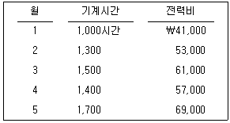
(주)한국이 위의 자료에 기초하여 고저점법에 의한 전력비 원가함수를 결정하였다. 이를 사용하여 20×1년 6월 전력비를 ￦81,000으로 예상한 경우, 20×1년 6월 예상 기계시간은?
- 1,800시간
- 1,900시간
- 2,000시간
- 2,100시간
- 2,200시간
(정답률: 0%)
74. (주)한국은 두 개의 보조부문(S1, S2)과 두 개의 제조부문(P1, P2)으로 제품을 생산하고 있다. 각 부문원가와 용역수수관계는 다음과 같다.
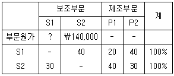
직접배부법으로 보조부문원가를 배부한 결과, P1에 배부된 보조부문의 원가 합계액이 ￦120,000인 경우, S1에 집계된 부문원가는?
- ￦100,000
- ￦110,000
- ￦120,000
- ￦130,000
- ￦140,000
(정답률: 0%)
75. (주)한국은 표준원가계산제도를 채택하고 있으며, 단일 제품을 생산ㆍ판매하고 있다. 20×1년 직접재료원가와 관련된 표준 및 원가 자료가 다음과 같을 때, 20×1년의 실제 제품생산량은? (단, 가격차이 분석시점은 분리하지 않는다.)
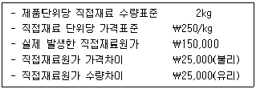
- 250단위
- 300단위
- 350단위
- 400단위
- 450단위
(정답률: 0%)
76. (주)한국은 종합원가계산을 사용하고 있다. 20×1년 생산에 관련된 자료는 다음과 같다.
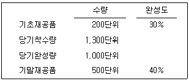
가공원가(전환원가)가 공정전반에 걸쳐 균등하게 발생한다면, 가중평균법과 선입선출법 간에 가공원가(전환원가)의 완성품환산량 차이는?
- 60단위
- 120단위
- 180단위
- 240단위
- 300단위
(정답률: 5%)
77. (주)한국은 20×1년 1월 1일에 설립되었다. 20×1년부터 20×2년까지 제품 생산량 및 판매량은 다음과 같으며, 원가흐름은 선입선출법을 가정한다.
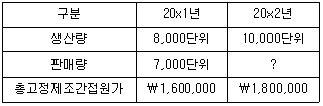
20×2년 변동원가계산에 의한 영업이익이 전부원가계산에 의한 영업이익에 비하여 ￦20,000 많은 경우, (주)한국의 20×2년 판매수량은? (단, 재공품 재고는 없다.)
- 8,500단위
- 9,000단위
- 9,500단위
- 10,000단위
- 11,000단위
(정답률: 0%)
78. (주)한국은 단위당 판매가격이 ￦1,000이고, 단위당 변동원가가 ￦700인 제품을 생산ㆍ판매하고 있다. 고정원가가 ￦450,000일 때, 손익분기점 수량은?
- 750단위
- 1,000단위
- 1,250단위
- 1,500단위
- 1,750단위
(정답률: 0%)
79. (주)한국은 실제원가계산을 적용하고 있으며, 20×1년의 기초 및 기말 재고자산은 다음과 같다.
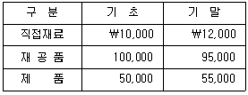
당기 매출원가가 ￦115,000일 경우, 당기총제조원가는?
- ￦115,000
- ￦120,000
- ￦125,000
- ￦130,000
- ￦135,000
(정답률: 0%)
80. (주)한국은 상품매매기업이다. 20×1년 상품 월별 예상판매량은 다음과 같다.
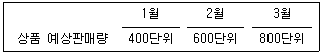
20×1년 1월 초 상품 재고는 없으며, 매월 말 상품의 적정재고수량은 다음 달 예상판매량의 25%이다. 2월 상품 구입수량은?
- 550단위
- 575단위
- 600단위
- 625단위
- 650단위
(정답률: 0%)
3과목: 공동주택시설개론
81. 지진하중 산정에 관련되는 사항으로 옳은 것을 모두 고른 것은?
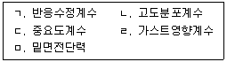
- ㄱ, ㄴ, ㄹ
- ㄱ, ㄷ, ㄹ
- ㄱ, ㄷ, ㅁ
- ㄴ, ㄷ, ㅁ
- ㄴ, ㄹ, ㅁ
(정답률: 0%)
82. 기초구조 및 터파기 공법에 관한 설명으로 옳은 것은?
- 서로 다른 종류의 지정을 사용하면 부등침하를 방지할 수 있다.
- 지중보는 부등침하 억제에 영향을 미치지 못한다.
- 2개의 기둥에서 전달되는 하중을 1개의 기초판으로 지지하는 방식의 기초를 연속기초라고 한다.
- 웰포인트 공법은 점토질 지반의 대표적인 연약 지반 개량공법이다.
- 중앙부를 먼저 굴토하고 구조체를 설치한 후, 외주부를 굴토하는 공법을 아일랜드 컷공법이라 한다.
(정답률: 5%)
83. 철근콘크리트구조의 특성에 관한 설명으로 옳은 것은?
- 콘크리트 탄성계수는 인장시험에 의해 결정된다.
- SD400 철근의 항복강도는 400 N/mm이다.
- 스터럽은 보의 사인장균열을 방지할 목적으로 설치한다.
- 나선철근은 기둥의 휨내력 성능을 향상시킬 목적으로 설치한다.
- 1방향 슬래브의 경우 단변방향보다 장변방향으로 하중이 더 많이 전달된다.
(정답률: 0%)
84. 굳지 않은 콘크리트의 특성에 관한 설명으로 옳지 않은 것은?
- 물의 양에 따른 반죽의 질기를 컨시스턴시(consistency)라고 한다.
- 재료분리가 발생하지 않는 범위에서 단위수량이 증가하면 워커빌리티(workability)는 증가한다.
- 골재의 입도 및 입형은 워커빌리티(workability)에 영향을 미친다.
- 물시멘트비가 커질수록 블리딩(bleeding)의 양은 증가한다.
- 콘크리트의 온도는 공기량에 영향을 주지 않는다.
(정답률: 0%)
85. 철근의 정착 및 이음에 관한 설명으로 옳은 것은?
- D35 철근은 인장 겹침 이음을 할 수 없다.
- 기둥의 주근은 큰 보에 정착한다.
- 지중보의 주근은 기초 또는 기둥에 정착한다.
- 보의 주근은 슬래브에 정착한다.
- 갈고리로 가공하는 것은 인장과 압축 저항에 효과적이다.
(정답률: 0%)
86. 철골구조에 관한 설명으로 옳은 것을 모두 고른 것은?
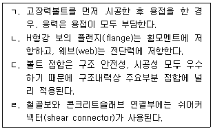
- ㄱ, ㄷ
- ㄱ, ㄹ
- ㄴ, ㄷ
- ㄴ, ㄹ
- ㄷ, ㄹ
(정답률: 0%)
87. 철골구조 용접접합에서 두 접합재의 면을 가공하지 않고 직각으로 맞추어 겹쳐지는 모서리 부분을 용접하는 방식은?
- 그루브(groove)용접
- 필릿(fillet)용접
- 플러그(plug)용접
- 슬롯(slot)용접
- 스터드(stud)용접
(정답률: 0%)
88. 구조용강재의 재질표시로 옳지 않은 것은?
- 일반구조용 압연강재: SS
- 용접구조용 압연강재: SM
- 용접구조용 내후성 열간압연강재: SMA
- 건축구조용 압연강재: SSC
- 건축구조용 열간압연 H형강: SHN
(정답률: 0%)
89. H형강보의 웨브를 지그재그로 절단한 후, 위 아래를 어긋나게 용접하여 육각형의 구멍이 뚫린 보는?
- 래티스보
- 허니콤보
- 격자보
- 판보
- 합성보
(정답률: 0%)
90. 벽돌구조의 쌓기 방식에 관한 설명으로 옳지 않은 것은?
- 엇모쌓기는 벽돌을 45 ° 각도로 모서리가 면에 나오도록 쌓는 방식이다.
- 영롱쌓기는 벽돌벽에 구멍을 내어 쌓는 방식이다.
- 공간쌓기는 벽돌벽의 중간에 공간을 두어 쌓는 방식이다.
- 내쌓기는 장선 및 마루 등을 받치기 위해 벽돌을 벽면에서 내밀어 쌓는 방식이다.
- 아치쌓기는 상부하중을 아치의 축선을 따라 인장력으로 하부에 전달되게 쌓는 방식이다.
(정답률: 0%)
91. 타일공사에 관한 설명으로 옳지 않은 것은?
- 클링커 타일은 바닥용으로 적합하다.
- 붙임용 모르타르에 접착력 향상을 위해 시멘트 가루를 뿌린다.
- 흡수성이 있는 타일의 경우 물을 축여 사용한다.
- 벽타일 붙임공법에서 접착제 붙임공법은 내장공사에 주로 적용한다.
- 벽타일 붙임공법에서 개량압착 붙임공법은 바탕면과 타일 뒷면에 붙임 모르타르를 발라 붙이는 공법이다.
(정답률: 0%)
92. 문틀을 짜고 문틀 양면에 합판을 붙여서 평평하게 제작한 문은?
- 플러시문
- 양판문
- 도듬문
- 널문
- 합판문
(정답률: 0%)
93. ( )에 들어갈 유리명칭으로 옳은 것은?
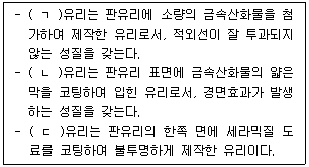
- ㄱ: 열선흡수, ㄴ: 열선반사, ㄷ: 스팬드럴
- ㄱ: 열선흡수, ㄴ: 스팬드럴, ㄷ: 복층유리
- ㄱ: 스팬드럴, ㄴ: 열선흡수, ㄷ: 복층유리
- ㄱ: 스팬드럴, ㄴ: 열선반사, ㄷ: 열선흡수
- ㄱ: 복층유리, ㄴ: 열선흡수, ㄷ: 스팬드럴
(정답률: 0%)
94. 창호철물에서 경첩(hinge)에 관한 설명으로 옳지 않은 것은?
- 경첩은 문짝을 문틀에 달 때, 여닫는 축이 되는 역할을 한다.
- 경첩의 축이 되는 것은 핀(pin)이고, 핀을 보호하기 위해 둘러감은 것이 행거(hanger)이다.
- 자유경첩(spring hinge)은 경첩에 스프링을 장치하여 안팎으로 자유롭게 여닫게 해주는 철물이다.
- 플로어힌지(floor hinge)는 바닥에 설치하여 한쪽에서 열고나면 저절로 닫혀지는 철물로 중량이 큰 자재문에 사용된다.
- 피봇힌지(pivot hinge)는 암수 돌쩌귀를 서로 끼워 회전으로 여닫게 해주는 철물이다.
(정답률: 5%)
95. 방수공법에 관한 설명으로 옳지 않은 것은?
- 시멘트액체방수는 모체에 균열이 발생하여도 방수층 손상이 효과적으로 방지된다.
- 아스팔트방수는 방수층 보호를 위해 보호누름 처리가 필요하다.
- 도막방수는 도료상의 방수재를 여러 번 발라 방수막을 형성하는 방식이다.
- 바깥방수는 수압이 강하고 깊은 지하실 방수에 사용된다.
- 실링방수는 접합부, 줄눈, 균열부위 등에 적용하는 방식이다.
(정답률: 0%)
96. 개량아스팔트시트 방수의 시공순서로 옳은 것은?
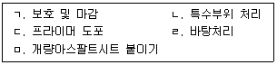
- ㄹ → ㄱ → ㅁ → ㄴ → ㄷ
- ㄹ → ㄴ → ㄱ → ㄷ → ㅁ
- ㄹ → ㄴ → ㄷ → ㅁ → ㄱ
- ㄹ → ㄷ → ㄴ → ㄱ → ㅁ
- ㄹ → ㄷ → ㅁ → ㄴ → ㄱ
(정답률: 0%)
97. 계단 각부에 관한 명칭으로 옳은 것을 모두 고른 것은?
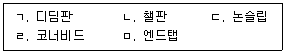
- ㄱ, ㄴ, ㄷ
- ㄱ, ㄴ, ㅁ
- ㄱ, ㄷ, ㄹ
- ㄴ, ㄹ, ㅁ
- ㄷ, ㄹ, ㅁ
(정답률: 0%)
98. 모임지붕 물매의 상하를 다르게 한 지붕으로 천장 속을 높게 이용할 수 있고, 비교적 큰 실내구성에 용이한 지붕은?
- 합각지붕
- 솟을지붕
- 꺽임지붕
- 맨사드(mansard)지붕
- 부섭지붕
(정답률: 0%)
99. 건축적산 및 견적에 관한 설명으로 옳지 않은 것은?
- 적산은 공사에 필요한 재료 및 품의 수량을 산출하는 것이다.
- 명세견적은 완성된 설계도서, 현장설명, 질의응답 등에 의해 정밀한 공사비를 산출하는 것이다.
- 개산견적은 설계도서가 미비하거나 정밀한 적산을 할 수 없을 때 공사비를 산출하는 것이다.
- 품셈은 단위공사량에 소요되는 재료, 인력 및 기계력 등을 단가로 표시한 것이다.
- 일위대가는 재료비에 가공 및 설치비 등을 가산하여 단위단가로 작성한 것이다.
(정답률: 0%)
100. 벽돌 담장의 크기를 길이 8 m, 높이 2.5 m, 두께 2.0 B(콘크리트(시멘트) 벽돌 1.5 B+ 붉은 벽돌 0.5 B)로 할 때, 콘크리트(시멘트)벽돌과 붉은 벽돌의 정미량은? (단, 사용 벽돌은 모두 표준형 190 × 90 × 57 mm로 하고, 줄눈은 10 mm로 하며, 소수점 이하는 무조건 올림한다.)
- 콘크리트(시멘트) 벽돌: 1,500매, 붉은 벽돌: 4,704매
- 콘크리트(시멘트) 벽돌: 1,545매, 붉은 벽돌: 4,480매
- 콘크리트(시멘트) 벽돌: 4,480매, 붉은 벽돌: 1,500매
- 콘크리트(시멘트) 벽돌: 4,480매, 붉은 벽돌: 1,545매
- 콘크리트(시멘트) 벽돌: 4,704매, 붉은 벽돌: 1,545매
(정답률: 0%)
101. 트랩의 봉수파괴 원인이 아닌 것은?
- 수격작용
- 모세관현상
- 증발작용
- 분출작용
- 자기사이펀작용
(정답률: 5%)
102. 배관의 마찰손실수두 계산 시 고려해야 할 사항으로 옳은 것을 모두 고른 것은?
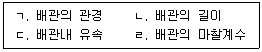
- ㄱ, ㄷ
- ㄴ, ㄹ
- ㄱ, ㄴ, ㄹ
- ㄴ, ㄷ, ㄹ
- ㄱ, ㄴ, ㄷ, ㄹ
(정답률: 0%)
103. 건축설비의 기초사항에 관한 내용으로 옳은 것은?
- 순수한 물은 1기압 하에서 4℃일 때 가장 무겁고 부피는 최대가 된다.
- 섭씨 절대온도는 섭씨온도에 459.7을 더한 값이다.
- 비체적이란 체적을 질량으로 나눈 것이다.
- 물체의 상태 변화 없이 온도가 변화할 때 필요한 열량은 잠열이다.
- 열용량은 단위 중량 물체의 온도를 1℃ 올리는데 필요한 열량이다.
(정답률: 0%)
104. 급탕설비에 관한 내용으로 옳지 않은 것은?
- 저탕탱크의 온수온도를 설정온도로 유지하기 위하여 서모스탯을 설치한다.
- 기수혼합식 탕비기는 소음이 발생하지 않는 장점이 있으나 열효율이 좋지 않다.
- 중앙식 급탕방식은 가열방법에 따라 직접가열식과 간접가열식으로 구분한다.
- 개별식 급탕방식은 급탕을 필요로 하는 개소마다 가열기를 설치하여 급탕하는 방식이다.
- 수온변화에 의한 배관의 신축을 흡수하기 위하여 신축이음을 설치한다.
(정답률: 0%)
1⑤. 위생기구에 관한 내용으로 옳은 것을 모두 고른 것은?
- ㄱ, ㄷ
- ㄴ, ㄹ
- ㄱ, ㄴ, ㄹ
- ㄴ, ㄷ, ㄹ
- ㄱ, ㄴ, ㄷ, ㄹ
(정답률: 0%)
106. 오수처리설비에 관한 설명으로 옳지 않은 것은?
- DO는 용존산소량으로 DO 값이 작을수록 오수의 정화능력이 우수하다.
- COD는 화학적산소요구량, SS는 부유물질을 말한다.
- BOD 제거율이 높을수록 정화조의 성능이 우수하다.
- 오수처리에 활용되는 미생물에는 호기성미생물과 혐기성미생물 등이 있다.
- 분뇨란 수거식화장실에서 수거되는 액체성 또는 고체성의 오염물질을 말한다.
(정답률: 0%)
107. 다음은 건축물의 설비기준 등에 관한 규칙상 신축공동주택등의 기계환기설비의 설치기준에 관한 내용의 일부이다. ( )에 들어갈 내용으로 옳은 것은?
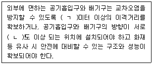
- ㄱ: 1.0, ㄴ: 45
- ㄱ: 1.0, ㄴ: 90
- ㄱ: 1.5, ㄴ: 45
- ㄱ: 1.5, ㄴ: 90
- ㄱ: 3.0, ㄴ: 45
(정답률: 0%)
108. 지능형 홈네트워크 설비 설치 및 기술기준에 관한 내용으로 옳은 것은?
- 가스감지기는 LNG인 경우에는 바닥 쪽에, LPG인 경우에는 천장 쪽에 설치하여야 한다.
- 차수판 또는 차수막을 설치하지 않은 통신배관실에는 최소 30 mm 이상의 문턱을 설치하여야 한다.
- 통신배관실내의 트레이(tray) 또는 배관, 덕트 등의 설치용 개구부는 화재시 층간 확대를 방지하도록 방화처리제를 사용하여야 한다.
- 통신배관실의 출입문은 폭 0.6미터, 높이 1.8미터 이상이어야 한다.
- 집중구내통신실은 TPS실이라고 하며, 통신용 파이프 샤프트 및 통신단자함을 설치하기 위한 공간을 말한다.
(정답률: 0%)
109. 난방방식에 관한 설명으로 옳지 않은 것은?
- 온수난방은 증기난방과 비교하여 예열시간이 짧아 간헐운전에 적합하다.
- 난방코일이 바닥에 매설되어 있는 바닥복사난방은 균열이나 누수 시 수리가 어렵다.
- 증기난방은 비난방시 배관이 비어 있어 한랭지에서도 동결에 의한 파손 우려가 적다.
- 바닥복사난방은 온풍난방과 비교하여 천장이 높은 대공간에서도 난방효과가 좋다.
- 증기난방은 온수난방과 비교하여 난방부하의 변동에 따른 방열량 조절이 어렵다.
(정답률: 0%)
110. 승강기, 승강장 및 승강로에 관한 설명으로 옳지 않은 것은?
- 비상용승강기의 승강로 구조는 각층으로부터 피난층까지 이르는 승강로를 단일구조로 연결하여 설치한다.
- 옥내에 설치하는 피난용승강기의 승강장 바닥면적은 승강기 1대당 5 m2 이상으로 해야 한다.
- 기어리스 구동기는 전동기의 회전력을 감속하지 않고 직접 권상도르래로 전달하는 구조이다.
- 승강로, 기계실ㆍ기계류 공간, 풀리실의 출입문에 인접한 접근 통로는 50 ㏓ 이상의 조도를 갖는 영구적으로 설치된 전기 조명에 의해 비춰야 한다.
- 완충기는 스프링 또는 유체 등을 이용하여 카, 균형추 또는 평형추의 충격을 흡수하기 위한 장치이다.
(정답률: 0%)
111. 다음은 화재예방, 소방시설 설치ㆍ유지 및 안전관리에 관한 법령상 소방시설등의 자체점검 시 점검인력 배치기준에 관한 내용의 일부이다. ( )에 들어갈 내용으로 옳은 것은?
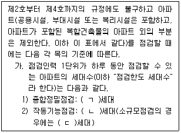
- ㄱ: 250, ㄴ: 300, ㄷ: 100
- ㄱ: 250, ㄴ: 350, ㄷ: 90
- ㄱ: 250, ㄴ: 350, ㄷ: 100
- ㄱ: 300, ㄴ: 250, ㄷ: 90
- ㄱ: 300, ㄴ: 350, ㄷ: 90
(정답률: 0%)
112. 바닥면적이 120 m2인 공동주택 관리사무실에서 소요조도를 400 럭스(lx)로 확보하기 위한 조명기구의 최소개수는? (단, 조명기구의 개당 광속은 4,000 루멘(lm), 실의 조명율 60 %, 보수율은 0.8로 한다.)
- 9개
- 13개
- 16개
- 20개
- 25개
(정답률: 0%)
113. 도시가스설비에 관한 내용으로 옳은 것은?
- 가스계량기는 절연조치를 하지 않은 전선과는 10 cm 이상 거리를 유지한다.
- 가스사용시설에 설치된 압력조정기는 매 2년에 1회 이상 압력조정기의 유지ㆍ관리에 적합한 방법으로 안전점검을 실시한다.
- 가스배관은 움직이지 않도록 고정 부착하는 조치를 하되 그 호칭지름이 13 mm 미만의 것에는 2 m 마다 고정 장치를 설치한다.
- 가스계량기와 화기(그 시설 안에서 사용하는 자체화기는 제외) 사이에 유지하여야 하는 거리는 2 m 이상이다.
- 가스계량기와 전기계량기 및 전기개폐기와의 거리는 30 cm 이상 유지한다.
(정답률: 0%)
114. 다음은 옥내소화전설비의 화재안전기준에 관한 내용이다. ( )에 들어갈 내용으로 옳은 것은?
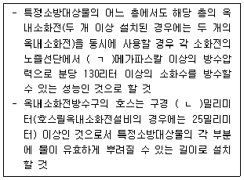
- ㄱ: 0.12, ㄴ: 35
- ㄱ: 0.12, ㄴ: 40
- ㄱ: 0.17, ㄴ: 35
- ㄱ: 0.17, ㄴ: 40
- ㄱ: 0.25, ㄴ: 35
(정답률: 0%)
115. 공동주택 층간소음의 범위와 기준에 관한 규칙상 층간소음에 관한 설명으로 옳지 않은 것은?
- 직접충격 소음은 뛰거나 걷는 동작 등으로 인하여 발생하는 층간소음이다.
- 공기전달 소음은 텔레비전, 음향기기 등의 사용으로 인하여 발생하는 층간소음이다.
- 욕실, 화장실 및 다용도실 등에서 급수ㆍ배수로 인하여 발생하는 소음은 층간소음에 포함한다.
- 층간소음의 기준 시간대는 주간은 06시부터 22시까지, 야간은 22시부터 06시까지로 구분한다.
- 직접충격 소음은 1분간 등가소음도(Leq) 및 최고소음도(Lmax)로 평가한다.
(정답률: 0%)
116. 6인이 근무하는 공동주택 관리사무실에서 실내의 CO2 허용농도는 1,000 ppm, 외기의 CO2 농도는 400 ppm일 때 최소 필요 환기량(m3/h)은? (단, 1인당 CO2 발생량은 0.015 m3/h 이다.)
- 30
- 90
- 150
- 300
- 400
(정답률: 0%)
117. 급수설비에서 펌프에 관한 설명으로 옳지 않은 것은?
- 펌프의 양수량은 펌프의 회전수에 비례한다.
- 볼류트 펌프와 터빈 펌프는 원심식 펌프이다.
- 서징(surging)이 발생하면 배관내의 유량과 압력에 변동이 생긴다.
- 펌프의 성능곡선은 양수량, 관경, 유속, 비체적 등의 관계를 나타낸 것이다.
- 공동현상(cavitation)을 방지하기 위해 흡입양정을 낮춘다.
(정답률: 0%)
118. 배관의 부속품에 관한 설명으로 옳지 않은 것은?
- 볼 밸브는 핸들을 90도 돌림으로써 밸브가 완전히 열리는 구조로 되어 있다.
- 스트레이너는 배관 중에 먼지 또는 토사, 쇠 부스러기 등을 걸러내기 위해 사용한다.
- 버터플라이 밸브는 밸브 내부에 있는 원판을 회전시킴으로써 유체의 흐름을 조절한다.
- 체크 밸브에는 수평ㆍ수직 배관에 모두 사용할 수 있는 스윙형과 수평배관에만 사용하는 리프트형이 있다.
- 게이트 밸브는 주로 유량조절에 사용하며 글로브 밸브에 비해 유체에 대한 저항이 큰 단점을 갖고 있다.
(정답률: 0%)
119. 다음에서 설명하고 있는 배관의 이음방식은?
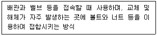
- 플랜지 이음
- 용접 이음
- 소벤트 이음
- 플러그 이음
- 크로스 이음
(정답률: 5%)
120. 소방시설 중 피난구조설비에 해당하지 않는 것은?
- 완강기
- 제연설비
- 피난사다리
- 구조대
- 피난구유도등
(정답률: 0%)
"관습법은 당사자가 그 존재를 주장ㆍ증명해야만 법원(法院)이 이를 적용할 수 있다."는 옳지 않은 설명이다. 관습법은 법률에 규정이 없는 경우에도 법원이 적용할 수 있는 법적 규제이며, 법원이 스스로 인식할 수 있는 것이기 때문에 당사자가 주장하거나 증명할 필요가 없다.